ГравитацияГравитация, тяготениеКак известно, любые два тела притягиваются друг к другу. Это свойство тел обусловлено их массой. Поскольку другие формы материи (поля, излучения) также обладают массой, они также подчиняются закону гравитации. Самое известное проявление притяжения масс — это существование силы тяжести, с которой Земля действует на все тела. Закон всемирного тяготенияСила, с которой два тела притягиваются друг к другу, называется гравитационной силой (силой тяготения). Величина этой силы определяется законом всемирного тяготения, сформулированным Ньютоном.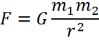 Здесь: Не следует смешивать взаимное притяжение масс с силами магнитного или электрического притяжения. Это силы совершенно разной природы. Силы гравитации не могут быть отталкиванием. Кроме того, гравитационное взаимодействие нельзя ослабить или устранить с помощью какого-либо экрана. Сила тяжестиПо формуле гравитации можно определить силу земного притяжения, подставив в числитель массу Земли и массу рассматриваемого тела, а в знаменатель — расстояние r тела до центра Земли: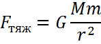
Определение: Сила тяжести убывает обратно пропорционально квадрату расстояния от центра Земли. Непосредственно на поверхности Земли сила тяжести вычисляется по упрощенной формуле. 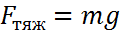 Сила тяжести Fтяж не обращается в нуль на конечных расстояниях r, она стремится к нулю лишь при бесконечном удалении тел. Ускорение свободного паденияУскорение свободного падения на любом расстоянии от Земли, а также на других планетах можно определить по формуле силы земного притяжения. Если сократить на массу тела , то можно получить: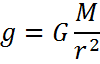 Ускорение свободного падения убывает обратно пропорционально квадрату расстояния от цента Земли. Формула ускорения свободного падения справедлива и для других небесных тел. Гравитационное поле, поле тяготенияКаждое тело (например, Земля) создает вокруг себя силовое поле — поле тяготения. Напряженность этого поля в любой его точке характеризует силу, которая действует на находящееся в этой точке другое тело.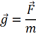 g — напряженность гравитационного поля Напряженность поля g представляет собой векторную величину, направление которой определяется направлением гравитационной силы F, а численное значение — формулой ускорения свободного падения. Напряженность гравитационного поля совпадает по величине, направлению и единицам измерения с ускорением свободного падения, хотя по своему физическому смыслу, это совершенно разные физические величины. В то время, как напряженность поля характеризует состояние пространства в данной точке, сила и ускорение появляются только тогда, когда в данной точке находится пробное тело. 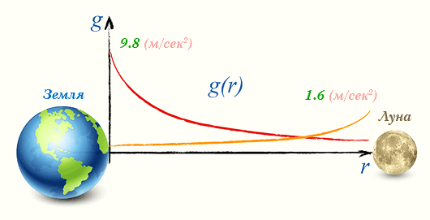 Из графика функции g=g(r) наглядно видно, что напряженность гравитационного поля g стремится к нулю, когда расстояние rстремится к бесконечности. Поэтому утверждения типа «спутник покинул гравитационное поле Земли» неверны. Гравитационные поля небесных тел перекрываются. Если двигаться вдоль прямой, соединяющей центры Земли и Луны, то, начиная с определенного места, будет преобладать напряженность гравитационного поля Луны. Первая космическая (орбитальная) скоростьПервая космическая скорость — это скорость которой должно обладать тело чтобы обращаться на постоянной высоте над поверхностью планеты. С помощью формулы ускорения свободного падения можно определить скорость обращения искусственного спутника Земли (и любой другой планеты) на любой высоте над ее поверхностью. Действующая на спутник сила тяжести равна центробежной силе, т.е. 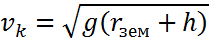 Или 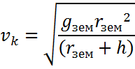 Или 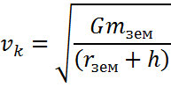 Здесь: Формула (3) позволяет определить скорость движения спутников по орбите. Однако конечная скорость ракеты-носителя в момент прекращения работы двигателей должна быть больше, чтобы вывести спутник на нужную высоту. Вторая космическая скорость (скорость убегания)Вторая космическая скорость — это минимальная скорость, с которой должно двигаться тело, чтобы оно могло без затрат дополнительной работы преодолеть влияние поля тяготения Земли, т.е. удалиться на бесконечно большое расстояние от Земли. Если: То кинетическая энергия тела должна быть равна работе по преодолению влияния гравитационного поля: 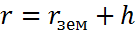 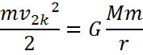 После упрощения и перестановки вторая космическая скорость примет вид: 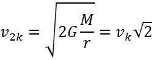 Фактически вторая космическая скорость для старта ракет с поверхности планеты, это скорость которой должно обладать тело непосредственно на поверхности планеты когда h мала, а гравитационная сила велика. По мере удаления от источника гравитационной силы скорость убегания уменьшается потому, что гравитационная сила убывает, и соотвественно уменьшается необходимая для убегания кинетическая энергия. |